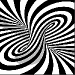

Art Machine
by
Tommy Von
performed by
MYST
Fortunes bitten, opportunities smitten – a torn up mitten
Is all that’s written for dear dog Kipplen – to stupid to fight
While Watson’s piling, continues smiling at iron filings
Turning and burning, converting to earnings
The perfume that got the cat…
The country’s nice this time of year,
Spoke chipping Fred to Harry dear
The watercress has been well fed
Said Harry dear to chipping Fred
I think I’ll go around the back, to start the motor in the shack
To see if we can catch the fear
That cog that makes the heavens clear
We’ll bring the pots to boiling red
Melting the groves to the peat-bog bed
And we can groove and shim about
Drag that droning mind-song out
Make animals from the peat-bog bed
You witch-star Hank and me gear-seer Fred
Groan, groan, groan that Art Machine
The burning oil is coming clean
Whir, whir, whir you blinking disc
Rounding out your cyclic whisk
Fire, fire, fire you sparking points
And tear apart this friggin joint
Tear, tear, tear you space connect
The fabric of time’s chicken-neck
Talk unto this barking zoo
And let them know the fact of you
When the last cracked vision’s gone
You Art Machine go moving on
Moving on into my head
Goes the Art Machine of gear-seer Fred
Harry gave the contraption thought
But Freddy caused it’s blood to clot
Moving on … (x11)